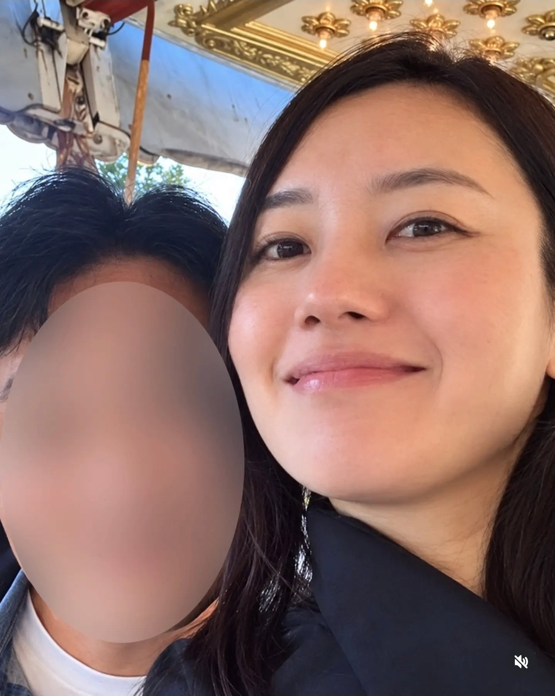
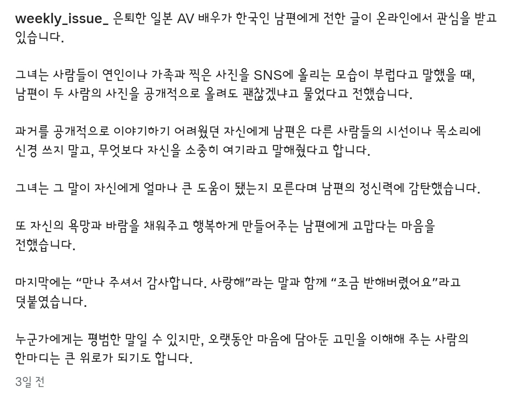

,


,
진짜 제일 좋아했던 배우 미시육덕충으로써 최고의 배우였음
행복하시길.
진짜 이쁘긴 하다
남편과 행복하게 사시길!
막상 옷입고 있으면 잘 못알아볼거 같은데
복귀 부탁드립니다
ㅇㄷ
찌찌찌찌 옵빠이 보잉보잉~
노모작품도 찍었었네…
와 한국인이랑 결혼했다고?
종종 긴자에 나타나서 주먹밥 파시더라
5늘은 2거다
줄무늬스타킹 입고 나왔던게 쩔었는데
번호
행복하세여
노모 부럽다
왠지 모르겠는데 이 누나는 진짜 영상에서가 얼굴 각도에 따라 존나 이쁨
고딩 때 저 누나꺼로 진짜 ㅈㄴ 많이 뺌